NAVIGATION
TOP of Page
MAIN Page
HOME Page
PREV Page
NEXT Page
HOME PAGE
About Website
Main Pages
MAIN PAGES
Tasmania Tour
Visit Riverina
Knapsack Tour
Citroën Cars
Model Railways
European Rail
Tasmanian Rail
Computers
High Fidelity
Projects
Recipes
TASMANIA TOUR
North West
Central North
East Coast
South East
South West
Highlands
West Coast
North Coast
VISIT RIVERINA
Albury-Wodonga
Federation Council
Berrigan Shire
North-West
Campaspe Shire
Moira Shire
Shepparton G.C.
Benalla R.C.
Indigo Shire
Silos & Waterways
KNAPSACK TOUR
General Info
Whitton's Constructs
Getting There
Knapsack Park
Knapsack Viaduct
CITROEN CARS
About Citroën Cars
Internet Links
Citroën D Series
Citroën ID-19 Specs
Citroën Car Club
My Citroën ID-19
My Citroën Xantia
My Citroën C5
RAIL MODELS
Marklin Finnish Sr2
Marklin Decoder
Electronic Reverser
AC Conversion
DC Controller
Kadee Couplers
EUROPEAN RAIL
German Steam Main
German Steam Branch
German Elect Old
German Elect New
German Diesels
Swiss Locos
Swedish Locos
Norwegian Elect Old
Norwegian Elect New
Norwegian Diesels
Finnish Locos
TASMANIAN RAIL
Government Railways
Emu Bay Railway
Mt Lyell Railway
Tourist Railways
COMPUTERS
Microcomputers
Linux OS
Unix OS
RetroBSD OS
HIGH FIDELITY
Stereo Amplifier
Restore Turntable
HP Stand Mount
Jaycar Stand Mount
Bedroom Bookshelf
Workshop Bookshelf
System 3010
Lewis Stand Mount
Enclosure Calculator
PROJECTS
Grow an Avocado
Build a Jewel Box
Restore Hand Plane
French Police Siren
In Car Thermometer
RECIPES
About Recipes
Delicious Pizza
Spaghetti & Mince
Pork Curry
Chinese Stir Fry
Hearty Soup
Caesar Salad
Greek Salad
|
About Worthington's Workshop Website
This website was originally created on the free 10MB webspace available to all Telstra subscribers.
Telstra then made a corporate decision to delete the websites. This site was then transferred to a
new home at iiNet on 16th June 2018. It originally suffered many problems due to it being written
using Dreamweaver 8, which resulted in excessive code generation.
I then discovered Ubuntu Linux to find a whole new way of doing things. I began using the free
Bluefish editor to great advantage and manually code the website on an iiNet web server using
HTML and CSS since 6th Dec 2019. When iiNet was acquired by TPG all website hosting again
disappeared. I then decided to change ISP providers to Aussie Broadband, which did not have a
web hosting service.
After several years in the wilderness I decided to get back into website production and purchased a
domain name and website hosting from Australian Websites. The current website is the result of
this. I may continue to further modify the pages to a modern standard using the inbuilt Content
Management System (CMS), but that is for the future.
Pages have been optimised for viewing at 1024*768 pixels screen resolution, with the font set to
'Arial' 14 point. I hope you enjoy the web site.
Bob Worthington
TOP
Main Pages of the Website
|
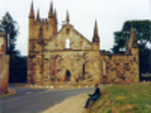
Tasmania Tour
|
TASMANIA FULL TOUR
Described here is a ten day tour across Tasmania with out of the way
locations and experiences, resulting from a collation of my travels.
Tasmania is best enjoyed during summer, outside school holidays. An
affordable holiday solution is to rent a small car for a week and stay in
a pub overnight. Why not go?
|
|
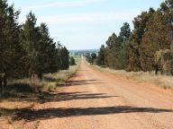
Visit Riverina
|
VISIT THE LOWER RIVERINA
For a different holiday experience to the usually visited realms, why not
travel south-west to the Lower Riverina. NSW includes small towns with
orchards, superb lakes, canals and wetlands. VIC towns have wineries,
painted silos, decent restaurants, quiet rural hotels, historic regions and
outstanding museums. Have a look for the working Opera House in the
small rural town (population 24!) of Morundah in Federation Council.
|
|
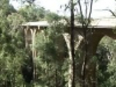
Knapsack Tour
|
KNAPSACK WALKING TOUR
An interesting 3 hour return walk from Knapsack Park to Knapsack Street along an old railway line to view the historic
Knapsack Viaduct near Lapstone, just across the Hawkesbury River from Penrith in Western Sydney, NSW.
|
TOP
|
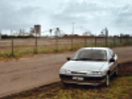
Citroën Cars
|
CITROEN CARS
I have been interested in citroëns since the mid 60's. What piqued my interest was that my Tasmanian uncle drove a 1963
ID-19. After waiting a quarter of a century, I finally bought an ID-19 sedan. My current vehicles are the 1959 ID-19 and a 2010 C5 X7.
|
|
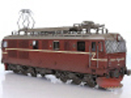
Model Railways
|
MODEL RAILWAYS
Information and projects for three model railway systems: European HO - Märklin HO using 3 rail track and AC motors,
Australian HO - New South Wales steam locomotives and diesels, English OO - Great Western Railway steam.
|
|
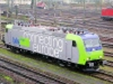
European Rail
|
EUROPEAN RAILWAYS
Pictures and specifications for locomotives of the German, Swiss and Scandinavian railways. There are links to a German
railways timeline, epoch/era definitions, German train formations plus locomotive and rolling stock numbering. Details are
given for railway system names and a biography of Robert Garbe.
|
|
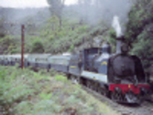
Tasmanian Rail
|
TASMANIAN RAILWAYS
Tasmania's 3'6"(1067mm) narrow gauge rail network only has a few hundred kilometres separating the ends of the
network. The operations are moderately scaled with a huge variation within a small distance.
|
TOP
|
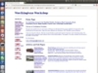
Computers
|
COMPUTERS
Linux is a free multitasking computer Operating System (OS) for use on Desktop and Server PC's. Ubuntu is a Linux distro.
Unix is the progenitor of Linux and Mac OS-X. RetroBSD v2.11 is a Unix System for the Maximite microcomputer.
|
|
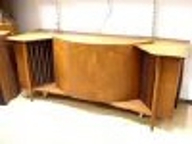
High Fidelity
|
HIGH FIDELITY
Surprisingly few 'High Fidelity' loudspeakers meet the criterion of having their drivers used within bandwidth limits
determined by the cone breakup and resonant frequencies. Included are some better design concepts, plus plans for several
speakers, an amplifier and restoring a turntable.
|
|
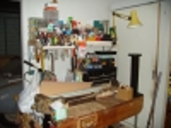
Projects
|
PROJECTS
My shed is the place where all my creations are hatched and is a respite from the noise of the world.
It is a place where I build woodwork and metalwork projects and work on a few gardening projects.
|
|
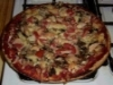
Recipes
|
RECIPES
Some interesting tried and successful recipes from the Worthington kitchen. Try some of the following recipes: Greek Salad,
Delicious Pizza, Spaghetti & Mince, Pork Curry, Chinese Stir Fry and a delicious Hearty Soup.
|
TOP
|